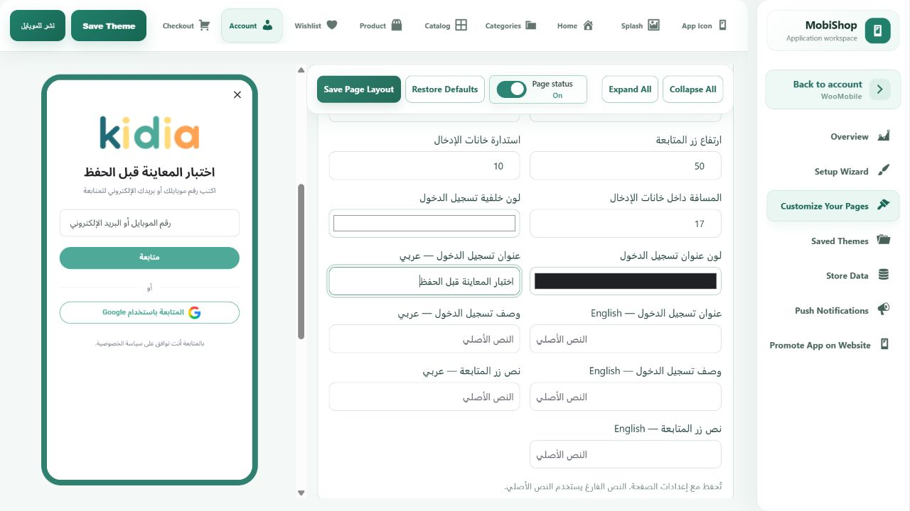

WooMobile • مراجعة 26 أكتوبر 2026
الإصلاحات في المصدر المشترك للبيلدر
تم إصلاح العيوب المثبتة في العناوين، والعملات، وقواعد دخول المفضلة على أودو، ومعاينة التعديلات واستعادة المسودات. الإصلاحات لا تعتمد على اسم كيديا أو متجر بعينه، وتحافظ على شكل الشاشات الحالي.
نسخة البرفيو الجديدة منشورة ومراجَعة
نتائج الاختبارات
800اختبار تطبيق ناجح
9 اختبارات متروكة بشروطها، بلا إخفاقات
1,318نتيجة ناجحة في مصفوفة المنصات
متجران لكل منصة مع العربية والإنجليزية
68 / 68مجموعة اختبار ناجحة
للبيلدر والربط من نسخة نظيفة للمصدر
نجحت أيضًا 24 حالة لعقود أودو، و17 فحصًا لإعدادات البناء ومصفوفة الاختبار، وفحص 36 عنصر تحكم على السيرفر مع التراجع عن بيانات التجربة. الأعداد تمثل مجموعات تشغيل متداخلة وليست عددًا مجمعًا لاختبارات فريدة.
تحليل التطبيق بلا ملاحظات. مطابقة 46 ملفًا للبرفيو بلا اختلافات. انتهت وظائف الفحص الآلي الست بالنجاح، بما فيها بناء أندرويد، على المصدر 8cecc54d55c03b46a3140c9bc372b93a3a3d566d. نتائجها محفوظة مع هذه المراجعة.
ما الذي تغير؟
| المشكلة | الإصلاح العام |
|---|
| العنوان المحفوظ لا يحترم حقول المتجر بالكامل | قراءة ظهور الحقول وإلزاميتها والقيم والاختيارات من إعداد المتجر. الحفاظ على الرمز البريدي والبلد، والتحقق من رمز البلد، وإعادة اختيار المحافظة عند تغيير البلد دون فقد باقي الكتابة. |
| افتراض عدد ثابت للخانات العشرية في شوبيفاي | توحيد دقة العملة بين المنتجات والسلة وفق بيانات ISO 4217 بدل تطبيق خانتين على كل العملات. |
| المفضلة على أودو لا تستخدم هوية أودو بصورة موحدة | قاعدة مشتركة لصفحة المفضلة وزر القلب، تراعي السماح للضيف أو اشتراط الدخول، واستعادة الجلسة وانتهاءها. |
| إيقاف صفحة الحساب لا يطبق على أودو بنفس الطريقة | إدخال حساب أودو في نفس فحص إتاحة الصفحات المشترك. |
| تعديل عناصر التحكم لا يظهر فورًا في البرفيو | تمرير القيم المتغيرة فقط إلى المعاينة دون تغيير بنية سكاشن الهوم، مع منع اختلاف صيغة اللون من تسجيل تعديل وهمي. |
| استعادة مسودة قد تخلط اختيارات أو متاجر مختلفة | عزل المسودة حسب المتجر والصفحة، وفحص التعارض، وتصحيح استعادة الاختيارات في محرر ووردبريس القديم. |
ما تم اختباره على المتاجر المتصلة
| المنصة | التحقق الفعلي | حدود النتيجة |
|---|
| WooCommerce | قراءة الكتالوج على كيديا وبيئة الاختبار. إضافة وحذف من سلة ضيف جديدة ببيئة الاختبار والتأكد أنها عادت فارغة. | لم تنفذ عملية خصم كارت في هذه الدورة. |
| Odoo | قراءة الكتالوج وسلة الضيف وحقول الشحن وأسعاره عند تغيير البلد على بيئة الاختبار، ثم تنظيف السلة. | هذه النتيجة لا تثبت عمل كل بوابة دفع إضافية عند كل عميل. |
| Shopify | الدخول للإدارة بالحساب المحفوظ. فتح معاينة المتجر، واختيار متغير منتج وإضافته للسلة وفتح صفحة الدفع الرسمية، ثم حذفه والتأكد أن السلة فارغة. | متجر التطوير مقفول أمام واجهة شراء التطبيق. الدخول للإدارة أو معاينة الموقع لا يرفع هذا القيد، ولذلك اختبار ربط التطبيق الحي للنهاية لم يكتمل. |
لم تُدخل بيانات بطاقة أو بيانات عميل جديدة، ولم تتغير خطة شوبيفاي أو صلاحياته أو وسائل دخوله.
مراجعة البرفيو بعد النشر
- زر Google ظاهر، وتغيير نص الدخول المؤقت ظهر فورًا قبل الحفظ ثم أُعيد للنص الأصلي دون حفظ إعداد متجر.
- آخر سكشن منتجات في الهوم ظاهر. الانتقال من كارت «ALL PRODUCTS» إلى «NEW ARRIVAL» يعمل في نفس الجلسة، وعجلة الماوس تحرك البرفيو.
- تصميمات الأقسام العشرة وخيار تمييز أسماء الأقسام ما زالت موجودة، والقائمة المعروضة تحمل أقسام الموقع الفعلية.
- إيقاف التقييمات يخفي القسم والتبويب العلوي معًا. أُعيد الاختيار بعد التجربة إلى حالته الأصلية دون حفظ. لقطة الاختبار.

إثبات المعاينة الفورية. هذا نص تجربة فقط، وقد أُعيد بعد اللقطة للنص الأصلي دون حفظ أو نشر إعدادات المتجر.
ما يحتاج متابعة فعلية: إصلاحات البرفيو منشورة بالفعل. إصلاحات كود التطبيق تدخل في البناء المشترك الجديد، والتطبيقات القديمة المثبتة تحتاج نسخة مبنية بهذا المصدر. اختبار شوبيفاي الحي من التطبيق يحتاج متجرًا يسمح لواجهة الشراء بالوصول. المفضلة الحالية محفوظة محليًا لكل متجر؛ لا تعني النتيجة مزامنتها بين أجهزة العميل.
ثبات التعديلات
المصدر محفوظ في فرع البناء المشترك، مع اختبارات تمنع رجوع الحالات المكتشفة. النشر أخذ نسخًا احتياطية قبل تفعيل البرفيو، والتعديلات الموجودة مسبقًا من العمل الموازي لم تدخل ضمن هذا التغيير. نتيجة هذه الدورة تؤكد الحالات التي تم فحصها، ولا تضمن توافق كل إضافة تجارية أو بوابة دفع غير مجربة.
الأدلة الفنية
مصدر التطبيق والبرفيو: 8a2d030ffef520e33225d9e38e32c9058b2ff675. الإصلاح اللاحق يحدّث اختبارات المفضلة فقط إلى القاعدة المشتركة.
نسخة البرفيو: 418d87619cf2. فرع المصدر: codex/unified-mobile-build.